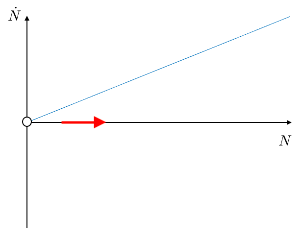
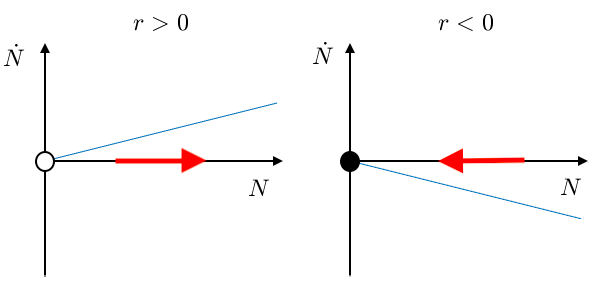
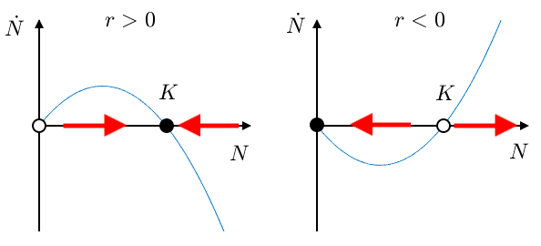

Now we will get into applying dynamical systems to the real world! The first application we will look at is population dynamics - using dynamical systems to study populations of organisms. Population dynamics has huge applications in medicine and biology, from studying tumour growth in cancer, to studying the impact of predators on the ecology, to the spread of infectious diseases such as AIDS or malaria. This page will give you an introduction to population dynamics, and then you will apply these skills to a group project modelling a zombie apocalypse.
So, what is population dynamics? Consider a population of organisms - these could be humans, animals, bacteria, etc. Let \(N\) be the number of organisms in the population, so we constrain \(N>0\) (i.e. you cannot have a negative population).
Assume that the birth rate of the population is proportional to the population size, with constant \(b \geq 0\). For example, if each year every member of the population gives birth to one new organism, then \(b=2\) per year, and each year the population increases by \(2N\). Therefore the population dynamics are given by \(\dot N = bN\).
This system has an unstable steady state at \(N=0\), with population going to infinity otherwise. The only exception is if \(b=0\) (no births), in which case the population never changes.
This population model does not account for deaths, so let us now include this in the model. Like with births, we assume that the death rate of the population is proportional to population size, with constant \(d>=0\). The population dynamics become \(\dot N = bN-dN = (b-d)N = rN\), where \(r=b-d\).
If \(r>0\) (more births than deaths), then the dynamics are the same as before. If \(r < 0 \) (more deaths than births), the population always decreases to zero, i.e. there is a stable steady state at \(N=0\). Both of these cases are plotted below. Finally, if \(r=0\) (equal number of births and deaths), the population does not change.
A commonly used population model modifies this equation slightly to read \(\dot N = rN(1- {N\over K})\) for \(K>0\), known as the logistic model. Look at the plot below. How do you interpret parameter \(K\)? Do you think this model is more realistic than the model in 5b? Are there any instances where this model doesn't make sense?
Once again \(r=0\) is the boring case where nothing changes. For \(r>0\) we have an unstable steady state at \(N=0\) and a stable steady state at \(N=K\). Knowing that \(r>0\) means the population should grow, we can interpret this as a realistic population model where the population grows to a value \(K\). If the population is larger than \(K\), it starts to die down. This is because there is, for example, not enough food. Therefore \(K\) is the carrying capacity of the population. If \(r < 0\), the stable and unstable steady states switch. If \(N\) starts off less than \(K\), the population dies. However, the dynamics go wrong when \(N\) starts more than \(K\), as the population weirdly goes to infinity.